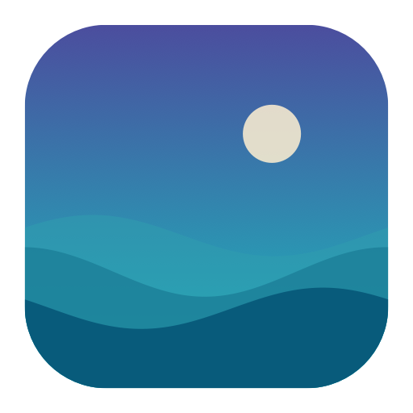

Turn any video into a calm, energy-aware live wallpaper. It lives in the menu bar, pauses itself when it should, and stays out of your way.
Pick a file, paste a URL, or browse free stock clips (Pexels, Coverr, Pixabay) right in the app.
Schedule different videos through the day, and auto-swap a light/dark variant with macOS appearance.
Pauses on battery, in Low Power Mode, when the screen sleeps, and when a fullscreen app or game covers the display.
Give each monitor its own video or a crossfading playlist folder.
Drive it from Shortcuts, AppleScript, or the terminal via the driftwall:// URL scheme.
No Dock icon, no account, no telemetry. A tidy menu-bar agent that respects Reduce Motion.
Homebrew (recommended)
brew install --cask emerytech/driftwall/driftwall
Direct download
.dmg from the releases page.
Using an unsigned build? macOS may say it can't verify the developer. Right-click the app → Open once, or install with
brew install --cask --no-quarantine …. The notarized download installs with no prompt.
Build from source
git clone https://github.com/emerytech/Driftwall.git cd Driftwall && ./build.sh && open Driftwall.app
Driftwall is free and made by one person. If it's brightening your desktop, a small tip keeps it going — entirely optional.
☕ Support Driftwall on Ko-fi